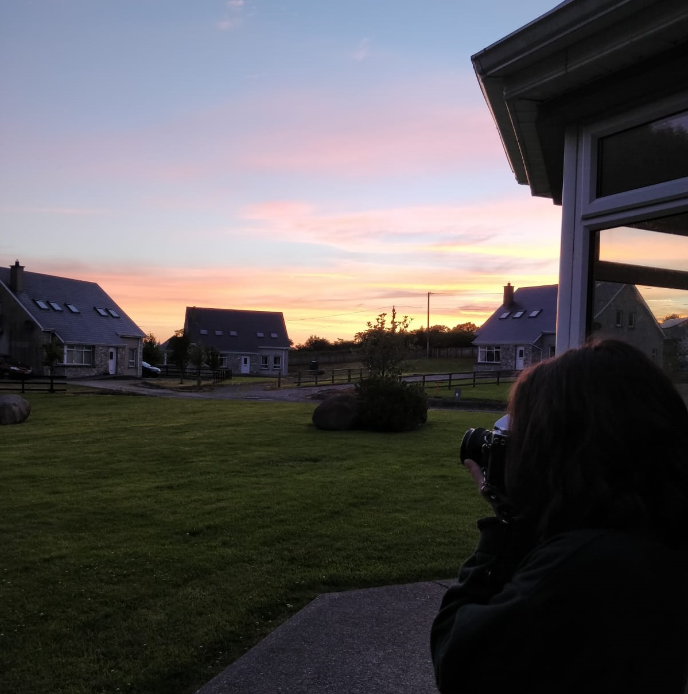

2020 is CANCELLED! Since we are all in lockdown and can't travel anywhere this summer I decided to put together a collection of photos I took on my iPhone during my travels last year. I travelled to London on a Harry Potter themed trip, went Interrailing to 5 countries in Europe, visited Portugal and spent a lot of time in Ireland. I hope you enjoy my little collection and it doesn't give you the holiday blues too bad. Pick a place on the navigation bar above!
